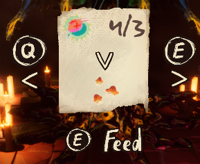
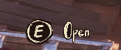

What I built
Bloom was a student project at Breda University of Applied Sciences. I was one of three gameplay/systems programmers and worked on core gameplay systems and UI, all in Blueprints:
- the inventory system and item log
- held item visuals, for switching tools in the player's hand
- the shop and the creature trading UI
- diegetic UI: plant upgrade costs, water level and interaction prompts
- music and sound effect integration
Technical details
Inventory system
I built the inventory system from scratch. Each item has a stack size. When you add an item you already have, it fills the existing stacks first before it takes a new slot. The player can scroll through the items and rearrange the inventory by selecting and swapping slots.
Item log
I made an item log that shows up in the top right corner whenever the player gains or loses an item. Each entry shows the item icon, the amount and a + or − sign. Multiple entries stack vertically.
Held item visuals
When the player equips a tool like the shears or the watering can, it appears in their hand. When they switch away, the item is stored on the player's body: the watering can clips onto the belt and the shears go on the back.
Shop system
After going through the design with a designer, I made a set of reusable widget blueprints for the shop: a cost item widget that shows one resource cost, a shop item widget that combines the item you buy with its list of costs, and the shop grid itself, which fills with the available items at runtime.
Creature trading
Trading with the creature is a simpler system: the player gives one item in exchange for a seed. I reused parts of the shop widgets to build this UI quickly. The player can cycle through all available trades to buy different seeds.

Diegetic UI
I made several UI elements that live in the game world instead of on the HUD.
Plant upgrade and water level
When the player walks up to a plant, a panel above it shows the upgrade cost. It checks the player's inventory and colors the text green or red depending on whether they have enough resources. I also made an indicator for how much water a plant has left. It started as a progress bar and was later redesigned into three water droplets. You can see both in the clip at the top of this page.
Interaction prompts
Walking up to an interactable object, like a chest, shows a prompt in the world with the button to press and what the action does. Each interaction type has its own prompt with custom art.

Sound effects and music
At the end of the project I integrated the audio. Music tracks loop and transition to the next song automatically, and they fade out when the player moves between indoor and outdoor areas. I also added sound effects for the shears and the watering can, and footstep sounds driven by the animation with a random pitch for variation.
Tools and workflow
The game was made in Unreal Engine using Blueprints, with Perforce for version control. The team worked in agile sprints during the block.
Credits
Bloom was made by a team at Breda University of Applied Sciences. The full credits are on the itch.io page.